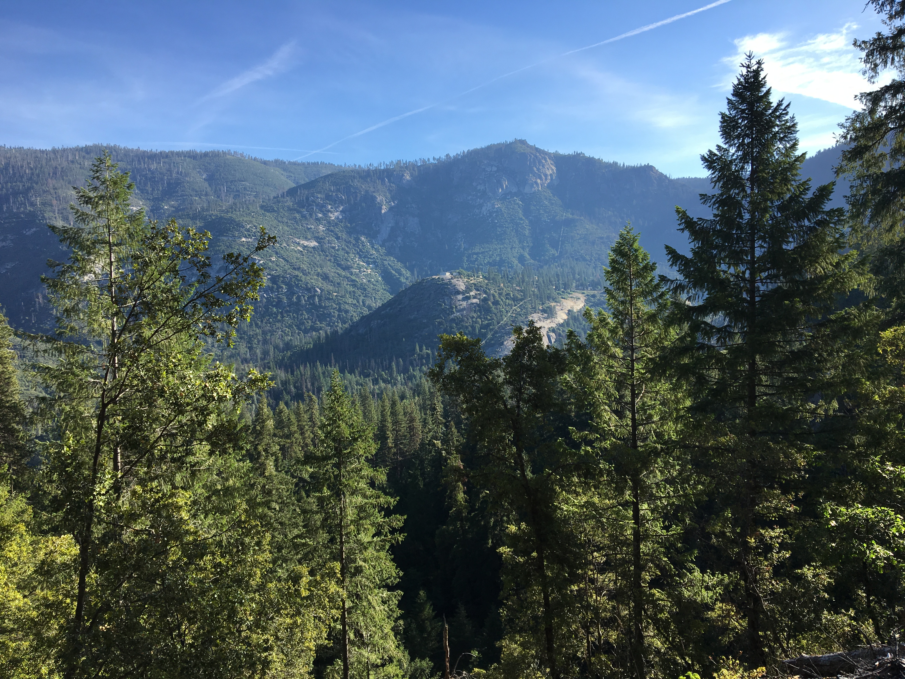
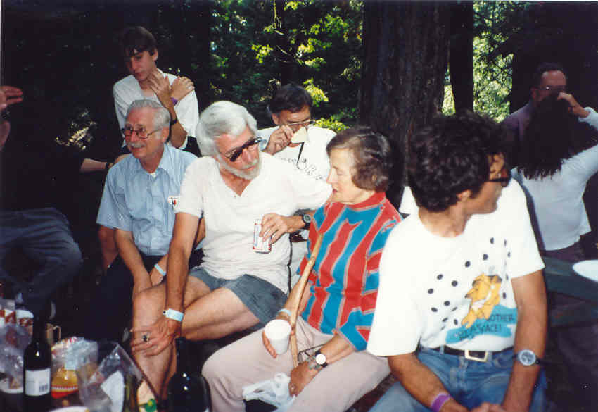
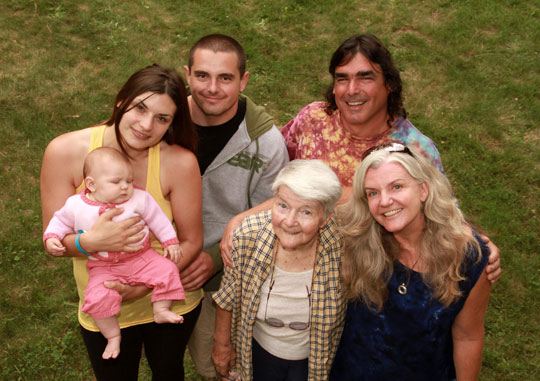
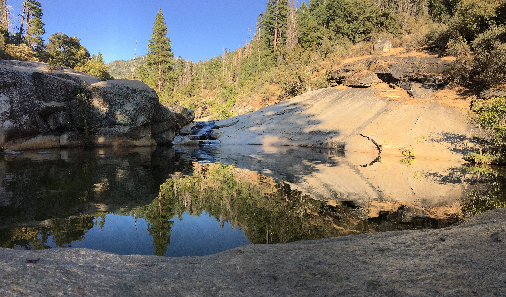
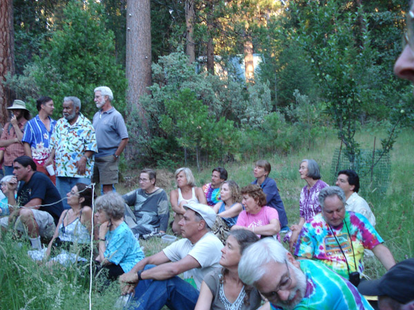
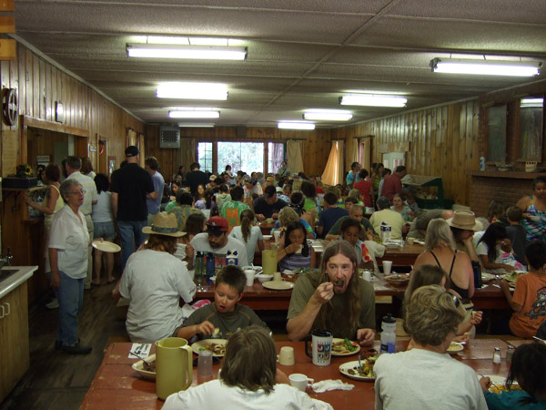
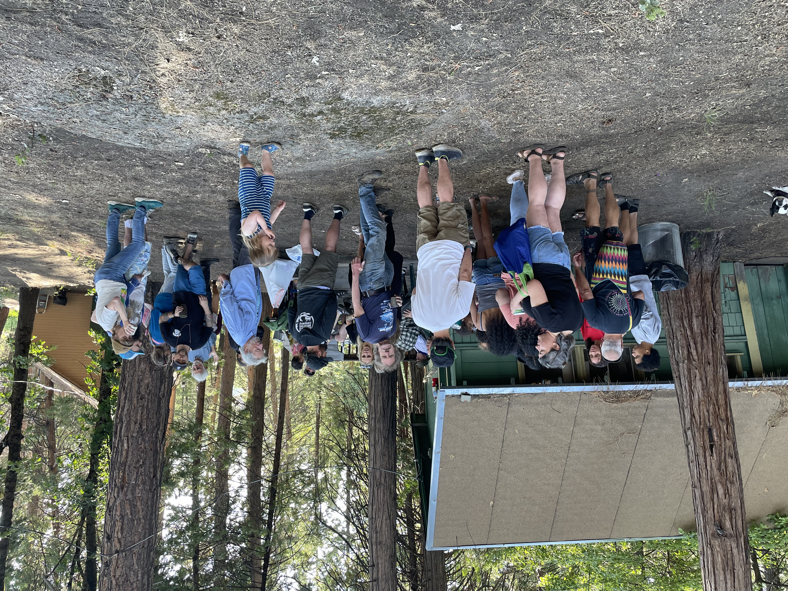

About the Camp
A cooperative family camp in the Sierra Nevada, running since 1938.
Location
Camp Sierra is located in the Sierra National Forest at nearly 5,000 feet elevation — midway between Huntington and Shaver Lakes, south of Yosemite, in one of the finest recreation areas in California. From Fresno, it's about 90 minutes. From the Bay Area or Los Angeles, it's a drive worth making.

The camp sits at 52050 Huntington Lake Road, Big Creek, CA 93605 — surrounded by granite, pine, and clear mountain air.
Get DirectionsHistory
People have been coming to Co-op Camp Sierra for over 85 years — drawn by the beauty of the place, the warmth of the community, and the depth of the friendships. Many families now span two, three, even four generations of campers. Single adults find their footing here just as easily as multigenerational families. All ages and backgrounds are genuinely welcome.
Co-op Camp was originally connected to the co-op grocery store movement and was built on cooperative principles. Campers pitch in to run activities, set up shared spaces, and make the week happen together — and many still do, as much or as little as they like. That cooperative spirit is what makes the place feel different from any other camp.


The Potholes
Just under a mile from camp, the Potholes are a series of massive granite pools fed by a rushing mountain creek. You can slide, swim, and float in cool Sierra water on a warm afternoon. It's one of those places that people mention when they're trying to explain why they keep coming back.

Cooperative Membership
Member campers contribute 5 hours of time to camp administration and activities and receive a discounted weekly rate. It's the cooperative model in practice: shared labor, shared benefit, shared ownership of what makes the week great.



Come for one summer. See why people keep returning for decades.